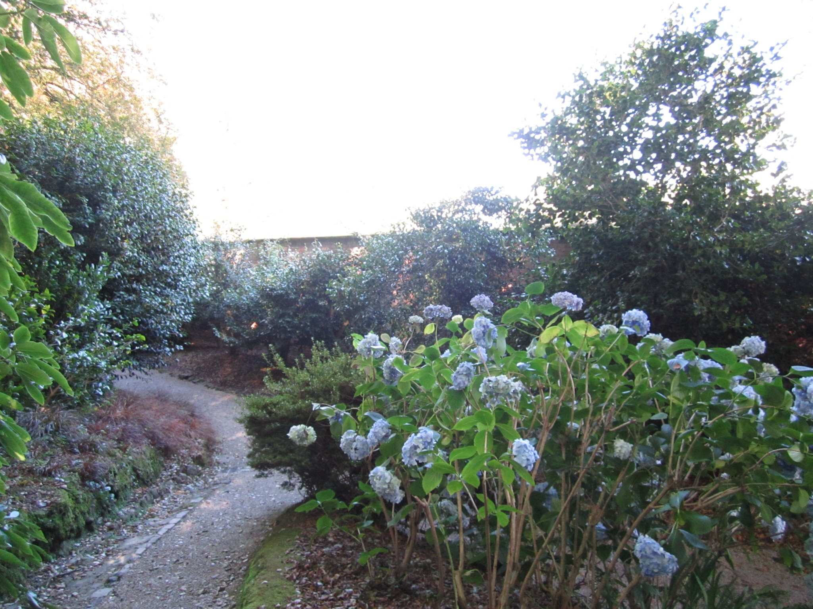
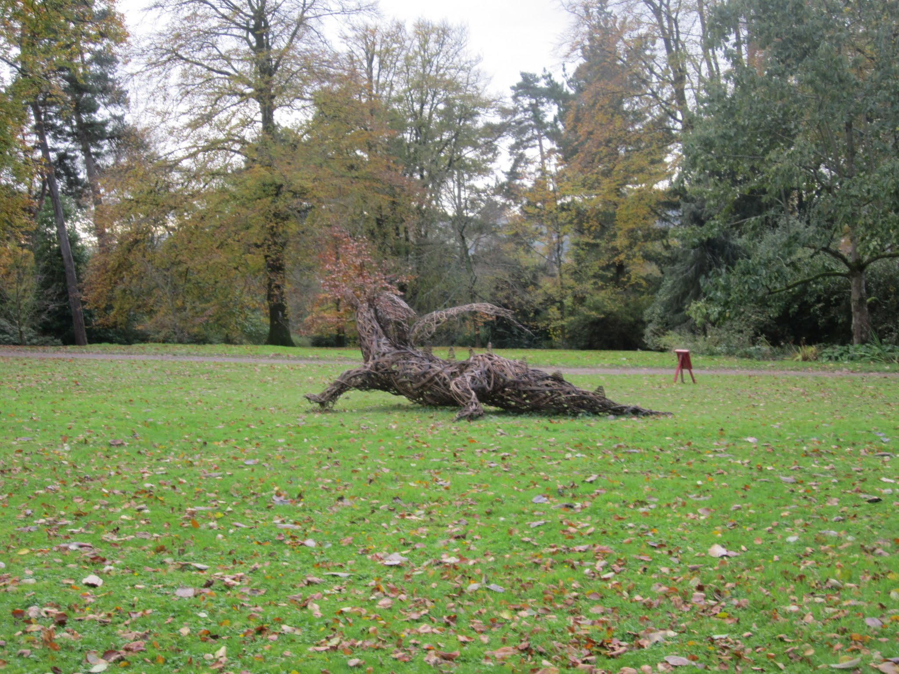

Publications



13) Goulet-Scott, B., M. Farnitano, A.L. Brown, C.O. Hale, M. Blumstein, R. Hopkins. 2022. In Submission. A multi-dimensional selective landscape drives adaptive divergence between and within closely related Phlox species.
12) Blumstein, M., S. Webster, R. Hopkins, D. Basler and D.L. DesMarais. 2022. In Preparation BioRxiv. Genomics highlight an underestimation of the urban heat island effect on red oak phenology (Q. rubra).
11) Blumstein, M., M. Oseguera, T. Caso-McHugh, D.L. DesMaris. 2022. In Review. Twig nonstructural carbohydrate dynamics’ relationship to leaf development.
10) Blumstein, M., J. Gersony, J. Martinez-Vilalta, A. Sala. 2022 - Accepted. Global Change Biology. Global nonstructural carbohydrate variation with climate.
9) Blumstein, M., A. Sala, D. Weston, N.M. Holbrook, R. Hopkins. 2022. New Phytologist. Plant carbohydrate storage: intra- and inter-specific tradeoffs reveal a major life history trait.
8) Rabideau-Childers, R., K. Angier, B. Dean, M. Blumstein, W. Darling, C. Ziemke, C. Perez-Martinez, D. Wu, W. Ye, I. Yekwayo, D. Kimuyu, D. Martins, N. Pierce. 2021. Ecology & Evolution. Evidence of nutrient translocation in response to smoke exposure by the East African ant acacia, Vachellia drepanolobium.
7) Barker Plotkin, A., M. Blumstein, D. Laflower, J. Chandler, J. Elkinton, J. Thompson. 2021. Functional Ecology. Defoliated trees die below a critical threshold of stored carbon.
6) Blumstein, M. & M. Furze. 2021. Accepted. Nonstructural carbohydrate response of temperate forest trees to drought.
5) Blumstein, M., R. Hopkins. 2021. Plant, Cell, & Environment. Adaptive variation and plasticity in nonstructural carbohydrate storage in a temperate tree species.
4) Blumstein, M., A.D. Richardson, D. Weston, J. Zhang, W. Muchero, and R. Hopkins. 2020. STAR Protocols. Protocol for projecting allele frequency change under future climate change at adaptive-associated loci.
3) Blumstein, M., A.D. Richardson, D. Weston, J. Zhang, W. Muchero, and R. Hopkins. 2020. Current Biology. A new perspective on ecological prediction reveals limits to climate adaptation in a temperate tree species.
2) Blumstein, M. and J.R. Thompson. 2015 Journal of Applied Ecology. Land use impacts on the quantity and configuration of ecosystem service provisioning in Massachusetts, USA.
1) Thompson J. R., K. Fallon-Lambert, D.R. Foster, E. Broadbent, M. Blumstein, A. Almeyda Zambrano, Y. Fan. 2016. Ecosphere. The consequences of four plausible land-use scenarios for forest ecosystems and their services in Massachusetts, USA.